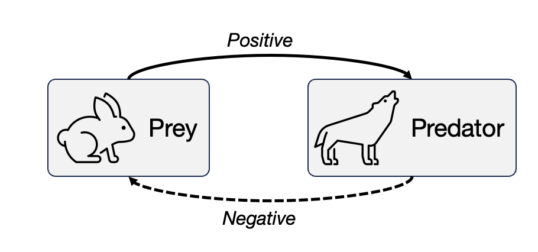
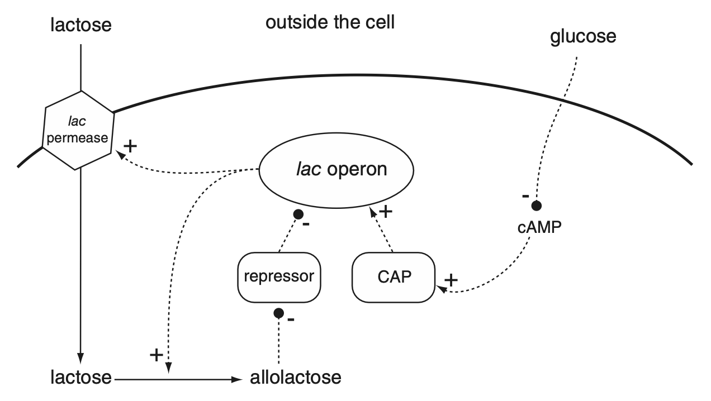
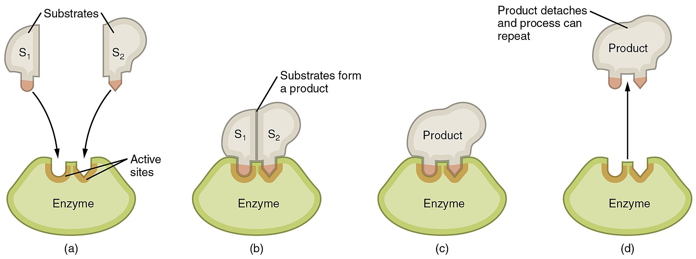
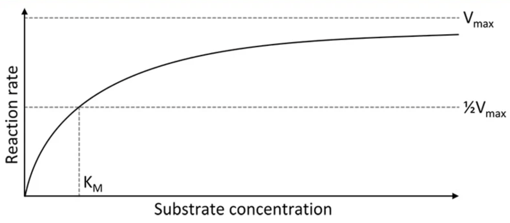
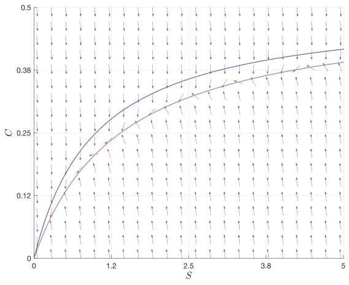

8 Michaelin-Menten law
This lecture is based on (Keener and Sneyd 2009, vol. 8/I, secs. 1.1, 1.4.1–2)
8.1 Feedback control
The prey-predator model is an example of system with a feedback. The prey population has a positive effect on the predator population, whereas the predator population has a negative effect on the prey population.

Specifically, in this case we say that the system has a negative feedback loop. In a negative feedback, a positive value of a variable yields a decrease in that variable and, vice versa, a negative value leads to an increase. An important feat of negative loops is that they can lead to oscillations, as per prey-predator models.
We can find many good examples of negative loops in real life (try yourselves!) and in biology too:
Gene regulation. Many genes inhibits their own transcription. An example is the protein Hes1, involved in the early stages of development of the embryo. Hes1 oscillates over time, because the protein inhibits its own transcription.
Circadian rhythm. Our body has an internal clock, synchronized with the Sun, located in the hypothalamus. The protein PER inhibits its own transcription, thus creating oscillations with a period of 24 hours.
Insuline-glucose oscillations. An intake of glucose (from a meal) causes the pancreas to secrete more insulin, which eventually lowers the level of glucose in the body.
Hormones. Many hormones like testosterone and progesterone are under negative feedback with the pituitary gland and the brain.
Positive feedback loops are important too. Using the analogy of ecology, consider the following (Kolmogorov) model: \[ \left\{\begin{aligned} N_1' &= N_1 f(N_1,N_2), \\ N_2' &= N_2 g(N_1,N_2), \end{aligned}\right. \]
We can have 3 situations:
\(\frac{\partial f}{\partial N_2} < 0\) and \(\frac{\partial g}{\partial N_1} > 0\): this is a prey-predator interaction, thus a negative feedback, because an increase of \(N_1\) increase \(N_2'\), which increases \(N_2\) and that has a negative effect on \(N_1'\) itself.
\(\frac{\partial f}{\partial N_2} < 0\) and \(\frac{\partial g}{\partial N_1} < 0\): this is a competitive model, because an increase of \(N_1\) (resp. \(N_2\)) has a negative effect of \(N_2\) (resp. \(N_1\)). Here, there is no vicious or virtous loop, possible equilibria are the extinction of either of the two species. (Coexistence is also possible but more difficult to achieve.)
\(\frac{\partial f}{\partial N_2} > 0\) and \(\frac{\partial g}{\partial N_1} > 0\): this is the case of cooperation or mutualism or symbiosis. Both species benefit from the presence of the other. This is a positive feedback, because as \(N_1\) increases, \(N_2\) increases too leading to an increase to \(N_1\) itself.
Examples outside biology include climate change, for instance \(\ce{CO2}\) emissions raise the global temperature, but at higher temperatures soil microbes have faster metabolism, thus breaking down organic matter faster, releasing more \(\ce{CO2}\). Or methane release, which has much more greenhouse power than \(\ce{CO2}\). Methane is trapped in permafrost, but its release increases temperatures which will melt permafrost and release more methane.
In general, life is an intricated network of positive and negative interactions. A positive effect is also called activation: a gene activates another gene, in the sense that its increase also increases the other one; a negative effect is called inhibition. An example is the lac operon shown below:

The lac operon is a feedback control loop present in the E. coli. When there is plenty of glucose, E. coli uses it for metabolism, even if other sugars are present. On the other hand, when glucose is absent, the bacterium activates other genes that are able to process lactose. This is an example of genetic switch.
In this series of lectures we will explore more in depth feedback loops. We will start with enzymatic reactions, a good example of how to create complex and non-linear interactions out of “simple” chemistry.
8.2 Chemical kinetics
Before delving deeper into the matter, we need to refresh a bit our chemistry knowledge, specifically chemical kinetics.
Chemical kinetics is the study of reaction rates. It is known that reaction rates depend on the concentration of reactants (and in some cases products) in characteristic ways that can be expressed in terms of differential equations known in chemistry as “rate laws”.
Consider the following reaction: \[ \ce{A + B -> C}, \]
Here, the reaction involves 3 molecules, \(\ce{A}\), \(\ce{B}\), and \(\ce{C}\), and it simply states “the reaction of \(\ce{A}\) and \(\ce{B}\) gives \(\ce{C}\)”. The formula tells us that exactly one molecule of \(\ce{A}\) and \(\ce{B}\) is needed to form one molecule of \(\ce{C}\) (stoichiometry of the reaction.) However, it does not give us information on the “rate” of product of \(\ce{C}\), for instance, or the consumption of \(\ce{A}\) and \(\ce{B}\).
We measure the concentration of a species \(\ce{X}\) at time \(t\in\mathbb{R}\) by \([\ce{X}](t)\). The unit of measure is mole per liter, that is \([\ce{X}]\) is the molar concentration. (We assume that the volume of the system is constant.) A mole of \(\ce{X}\) is exactly \(N_A = 6.023\times 10^{23}\) (Avogadro constant) molecules of \(\ce{X}\). So, the above reaction means that “one mole of \(\ce{A}\) plus one mole of \(\ce{B}\) gives exactly one mole of \(\ce{C}\)”. This is important, since it does not work that well with molecular weights!
The rate of consumption or production of \(\ce{X}\) is simply \[ \frac{\mathrm{d}[\ce{X}]}{\mathrm{d} t}, \]
with positive sign the case of production, and negative otherwise. From the stoichiometry of \(\ce{A + B -> C}\) we have that \[ \frac{\mathrm{d}[\ce{A}]}{\mathrm{d} t} = \frac{\mathrm{d}[\ce{B}]}{\mathrm{d} t} = - \frac{\mathrm{d}[\ce{C}]}{\mathrm{d} t}. \]
For the reaction \(\ce{A + 2B -> 3C + D}\) we have: \[ \frac{\mathrm{d}[\ce{D}]}{\mathrm{d} t} = \frac{1}{3}\frac{\mathrm{d}[\ce{C}]}{\mathrm{d} t} = - \frac{\mathrm{d}[\ce{A}]}{\mathrm{d} t} = - \frac{1}{2} \frac{\mathrm{d}[\ce{B}]}{\mathrm{d} t}. \]
8.2.1 Law of mass action
The fundamental “law” of a chemical reaction is the law of mass action. This law describes the rate at which chemicals collide and interact to form different chemical combinations. For the reaction \(\ce{A + B -> C}\), the law of mass action tells us that \[ \frac{\mathrm{d}[\ce{C}]}{\mathrm{d} t} = k [\ce{A}][\ce{B}], \]
that is, the rate of production of \([\ce{C}]\) is proportional to the concentration of \(\ce{A}\) and \(\ce{B}\). The law is based on the idea that the bimolecular chemical reaction results from the collision of \(\ce{A}\) and \(\ce{B}\), thus it must be proportional to the concentration of both. We encountered the same law for prey-predator systems. As for prey-predator system, therefore, the law is not inviolable, because in many situations also \(k\) depends on the concentrations. Deviations may occur at very large or very low concentrations of \(\ce{A}\) or \(\ce{B}\), for instance.
For thermodynamical reasons, a chemical reaction always proceeds in both directions, that is: \[ \ce{A + B <=>[$k_1$][$k_{-1}$] C}, \]
where \(k_1\) is the rate of the forward reaction \(\ce{A + B -> C}\), and \(k_{-1}\) is the rate of the backward reaction \(\ce{C -> A + B}\). Since the two reactions (forward and backward) are independent, we have that \[ \frac{\mathrm{d}[\ce{C}]}{\mathrm{d} t} = k_1 [\ce{A}][\ce{B}] - k_{-1}[\ce{C}]. \]
Note that we can apply the law of mass action also to the backward reaction: the rate is proportional to the concentration of the reactants, in this case only \(\ce{C}\).
The full system of equations results from the application of the law to each species: \[ \left\{ \begin{aligned} {}[\ce{A}]' &= -k_1[\ce{A}][\ce{B}] + k_{-1}[\ce{C}], \\ [\ce{B}]' &= -k_1[\ce{A}][\ce{B}] + k_{-1}[\ce{C}], \\ [\ce{C}]' &= k_1[\ce{A}][\ce{B}] - k_{-1}[\ce{C}]. \\ \end{aligned}\right. \]
There is some redundancy in the system, because of the conservation of mass. Indeed, \(\ce[A]+\ce[C]\) and \(\ce[B]+\ce[C]\) are constant. Another way to see this is noting that \(\ce[A]'+\ce[C]' = 0\) from the above system.
At equilibrium, the production and consumption rate of \(\ce{C}\) are the same. So: \[ \frac{\mathrm{d}[\ce{C}]}{\mathrm{d} t} = 0, \quad\Rightarrow\quad k_1 [\ce{A}]_\mathrm{eq}[\ce{B}]_\mathrm{eq} = k_{-1}[\ce{C}]_\mathrm{eq}. \]
The equilibrium constant of the reaction is: \[ K_\mathrm{eq} = \frac{k_{-1}}{k_1} = \frac{[\ce{A}]_\mathrm{eq}[\ce{B}]_\mathrm{eq}}{[\ce{C}]_\mathrm{eq}}. \]
The equilibrium constant is very important. First, it provides a link to thermodynamics (see the end of the notes). Second, it can be used to understand the trend of the reaction: when \(K_\mathrm{eq}\) is very small, then at equilibrium (so after waiting for long time) most of \(\ce{A}\) and \(\ce{B}\) are combined into \(\ce{C}\).
Quantitatively, since \([\ce{A}] + [\ce{C}]\) is constant, then \([\ce{A}]_\mathrm{eq} + [\ce{C}]_\mathrm{eq} = [\ce{A}](0) + [\ce{C}](0)\). Assuming that at the beginning \([\ce{C}](0)=0\) and \([\ce{A}](0) = [\ce{A}]_0>0\), then \[ [\ce{C}]_\mathrm{eq} = A_0 \frac{[\ce{B}]_\mathrm{eq}}{K_\mathrm{eq} + [\ce{B}]_\mathrm{eq}}. \]
In other words, when \([\ce{B}]_\mathrm{eq} = K_\mathrm{eq}\), half of \(\ce{A}\) is combined into \(\ce{C}\).
Consider now the reaction \[ \ce{\alpha A + \beta B -> \gamma C + \delta D}, \]
for some positive constants \(\alpha\), \(\beta\), \(\gamma\), and \(\delta\). We have that: \[ \frac{1}{\delta} \frac{\mathrm{d}[\ce{D}]}{\mathrm{d} t} = \frac{1}{\gamma}\frac{\mathrm{d}[\ce{C}]}{\mathrm{d} t} = - \frac{1}{\alpha}\frac{\mathrm{d}[\ce{A}]}{\mathrm{d} t} = - \frac{1}{\beta} \frac{\mathrm{d}[\ce{B}]}{\mathrm{d} t}. \]
For the law of mass action, we have: \[ \frac{1}{\alpha}\frac{\mathrm{d}[\ce{A}]}{\mathrm{d} t} = - k_1 [\ce{A}]^\alpha [\ce{B}]^\beta + k_{-1}[\ce{C}]^\gamma [\ce{D}]^\delta, \]
because we need \(\alpha\) molecules of \([\ce{A}]\) and \(\beta\) molecules of \([\ce{B}]\) for the forward reaction (and similar for the backward reaction). The equilibrium constant is: \[ K_\mathrm{eq} = \frac{[\ce{A}]^\alpha_\mathrm{eq}[\ce{B}]^\beta_\mathrm{eq}}{[\ce{C}]^\gamma_\mathrm{eq}[\ce{D}]^\delta_\mathrm{eq}}. \]
8.3 Michaelis-Menten law
A fundamental property of biochemical reactions in living cells is the fact that the rate at which they occur is regulated by the presence of other molecules. An enzyme is a protein that makes it possible that a reaction (that by itself would be extremely slow) occurs over a short time-scale, as necessary for the cell functioning, but is apparently not involved in the reaction itself, in the sense that its concentration at the end is the same as at the beginning.
Ezymes are catalysts that converts substrates into products. The speed-up of the reaction obtained thanks to the enzyme can be of several order of magnitudes, like millions of times or more. Enzymes are also highly specific. More importantly, enzymes are the building blocks of regulatory mechanisms present in every living body.
We consider now the archetypal example of enzymatic reaction. The diagram is the following: \[ \ce{S + E <=>[$k_1$][$k_{-1}$] C ->[$k_2$] P + E} \]
In the diagram \(\ce{S}\) refers to the “substrate” the molecule that is converted into \(\ce{P}\), the “product” of the reaction, while \(\ce{E}\) refers to enzyme molecules. Looking only at the left and right end-points of the diagram, one sees that a molecule of \(\ce{S}\) is converted into \(\ce{P}\), while one is left with same molecule of \(\ce{E}\) present in the beginning. However, one sees that \(\ce{E}\) is involved in intermediate reactions (the complex), necessary to understand why the presence of the enzyme is necessary for the reaction to occur.

The letters over each arrow in the diagram represent the rate constants at which each reaction (represented by an arrow) occurs. We assume that all reactions occur following the law of mass action: when a reaction involves two substances reacting, the rate at which the reaction occurs is proportional to the product of the concentrations of the substances involved; the rate constant is the proportionality constant. On the other hand, when a reaction involves a single substance, the reaction rate is the product of the rate constant times the concentrations of that substance.
It is easy transforming the diagram into a set of differential equations, using the principle that the concentration of each substance will increase at the sum of the rates of all reactions producing it, and decrease at those destroying it. Namely setting \[ \begin{aligned} {}[\ce{S}](t) &= \text{concentration of substrate $\ce{S}$ at time $t$}, \\ [\ce{E}](t) &= \text{concentration of enzyme $\ce{E}$ at time $t$}, \\ [\ce{C}](t) &= \text{concentration of complex $\ce{C}$ at time $t$}, \\ [\ce{P}](t) &= \text{concentration of product $\ce{P}$ at time $t$}. \end{aligned} \]
we obtain, \[ \left\{ \begin{aligned} {}[\ce{S}]' &= k_{-1}[\ce{C}] - k_1 [\ce{S}][\ce{E}], \\ [\ce{E}]' &= (k_{-1}+k_1)[\ce{C}] - k_1 [\ce{S}][\ce{E}], \\ [\ce{C}]' &= k_1 [\ce{S}][\ce{E}] - (k_{-1} + k_2)[\ce{C}], \\ [\ce{P}]' &= k_2 [\ce{C}]. \end{aligned} \right. \]
This appears to be a system of 4 differential equations with 4 unknowns \(([\ce{S}](t), [\ce{E}](t), [\ce{C}](t), [\ce{P}](t))\). Typical initial conditions will be \([\ce{S}](0) = s_0 > 0\), \([\ce{E}](0) = e_0 > 0\), \([\ce{C}](0) = [\ce{P}](0) = 0\) (at time \(t=0\), beginning of the reaction, there is neither product nor complex).
One can immediately see that the first 3 equations do not depend on \([\ce{P}](t)\); we can then solve the first 3 equations, then compute \([\ce{P}](t)\) (the quantity presumably more relevant) as: \[ [\ce{P}](t) = k_2 \int_0^t [\ce{C}](s)\,\mathrm{d}s. \]
Moreover, one may note that \[ \frac{\mathrm{d}}{\mathrm{d}t}\Bigl[ [\ce{C}](t) + [\ce{E}](t) \Bigr] = 0, \quad\Rightarrow\quad [\ce{C}](t) + [\ce{E}](t) = [\ce{C}](0) + [\ce{E}](0) = e_0. \]
We can therefore remove one equation and substitute \([\ce{E}](t) = e_0 - [\ce{C}](t)\). We end up with a system of 2 equations: \[ \left\{ \begin{aligned} {}[\ce{S}]' &= k_{-1}[\ce{C}] - k_1 [\ce{S}](e_0-[\ce{C}]), \\ [\ce{C}]' &= k_1 [\ce{S}](e_0-[\ce{C}]) - (k_{-1} + k_2)[\ce{C}], \\ \end{aligned} \right. \]
with initial conditions \([\ce{S}](0) = s_0 > 0\) and \([\ce{C}](0) = 0\).
It is certainly possible analyse the behavior of system as it is. For instance, we would like to know how \([\ce{C}]\), and hence \([\ce{P}]'\) vary over time and depending on the concentration of the substrate. This type of analysis leads to the Michaelis-Menten law, which states that: \[ [\ce{P}]' = V = \frac{V_\mathrm{max}[\ce{S}]}{K_m + [\ce{S}]}, \]
for \(V_\mathrm{max} > 0\) being the maximum reaction rate, that is \(V\to V_\mathrm{max}\) for \([\ce{S}]\to\infty\), and \(K_m\) is the half-saturation rate, that is when \([\ce{S}]=K_m\) then \(V = \frac{1}{2}V_\mathrm{max}\). Note that this law is exactly the Holling type II law from prey-predator models.

8.3.1 Equilibrium and phase portrait
As usual, we may have a look at the equilibria and their stability. Here, however, this analysis in not very insightful.
The only equilibrium is the origin. It is also locally asympotically stable, since: \[ J(0,0) = \begin{pmatrix} - e_0 k_1 & k_{-1} \\ e_0 k_1 & -k_2-k_{-1} \end{pmatrix} \]
so the trace is negative and \(\det J = e_0 k_1 k_2 > 0\).
The nullclines are: \[ \begin{aligned}{} [\ce{S}]' = 0 &&\Leftrightarrow&& [\ce{C}] &= \frac{e_0 k_1 [\ce{S}]}{k_{-1} + k_1 [\ce{S}]}, \\ [\ce{S}]' = 0 &&\Leftrightarrow&& [\ce{C}] &= \frac{e_0 k_1 [\ce{S}]}{k_{-1} + k_2 + k_1 [\ce{S}]}. \end{aligned} \]

The nullclines are similar: they have the same horizontal asymptote \(e_0\), they intersect at the origin, but the second one is slightly shifted to the right, because they reach \(\frac{1}{2}e_0\) (half of the maximum) at different values: for \([\ce{S}]=\frac{k_{-1}}{k_1}\) in the first case, and \([\ce{S}]=\frac{k_{-1}+k_2}{k_1}\) in the second case.
From the plot we see that once a trajectory enters into the corridor between the nullclines, it remains trapped. Since we only have the origin as equilibrium, all trajectories must converge there: the equilibrium is globally stable.
The corridor is shaped like a Michaelis-Menten law, in the sense that in the gap \([\ce{C}]\) varies with respect to \([\ce{S}]\) like in the Michaelis-Menten law. But which curve is the correct one? We will see it tomorrow.